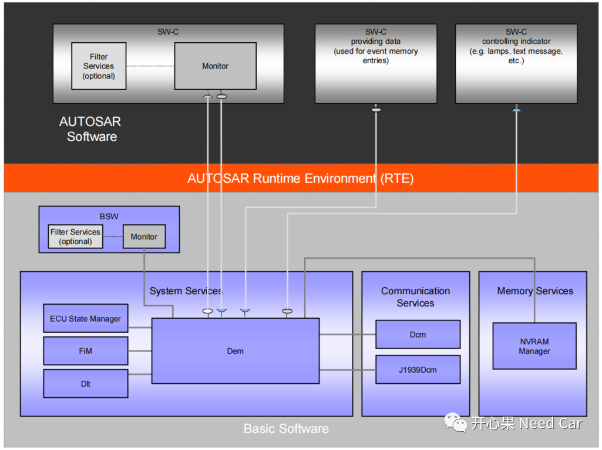

开心果 Need Car · 2022-02-06T14:06:00+08:00 · 微信原文
Autosar的Diagnostic Event Manager (Dem，诊断事件管理)模块是ECU诊断功能的核心模块之一。因为诊断功能太重要了，我们搞汽车嵌入式开发人员就不得不聊聊它，本文先说基础，之后我们慢慢聊。
DEM的交互模块
如下图所示，和DEM交互的模块包括：SWC、BSW、FIM、DLT、DCM、NVM等。这里我们不讨论每个模块功能，网上搜索或者Autosar标准能找到更多信息。

那我们聊什么？看图聊点开发所需要注意的东西。
（1）“Monitor”直白的意思就是监控，上图看出，诊断事件的监控可以由SWC做也可以由BSW做，到底谁来监控事件，应在开发之初就和底层开发人员、算法开发人员、系统明确清楚。
监控的事件有哪些呢？按照故障码DTC分类：底盘（C）、车身（B）、动力（P）和网络（U）。实际开发我就理解为两类：周期和非周期。周期事件就是某个事件有一定周期，比如某个报文的周期50ms；非周期事件就是某个事件非预期的发生，比如：开路、短路。
对于周期性事件，比如某个报文周期50ms，我们可以10ms或者50ms频率去检测该报文是否接收到。但是你不能以>50ms周期去检测，那样就不能及时检测到故障，还可能带来安全隐患。对于非周期的事件也需要一个最小检测周期，比如Busoff，虽然这件事是非周期性发生，但是我们要在该事件发生时的最短时间内知道，为什么要周期性检测呢？发生了就上报故障不行吗？不是说不可以，而是故障的发生有时存在抖动，不是说发生了就没有改正机会了，要给一个容错性。比如busoff，一般可以要求其连续发生n次（比如：n = 5）再上报故障。
（2）故障发生时，存储数据来自哪里？数据可以从SWC获取，也可以从BSW获取。这里要说的是这些数据具有复用性，比如：车速。一般$22服务会有一个DID对应车速，即读取车速信息。其实$2E服务写车速也是对应的它。当故障发生时，故障存储的拓展信息或者快照信息一般也包含车速，大家用的信息都是从一个地方获取的。
（3）故障信息存储到NVM，这里要注意的就是存储的方式，存储NVM的选择方式：周期性存储、立即存储、下电存储等。具体怎样存，要看需求了，有的需求中，这几种方式全都用上。
DTC status bit
DTC状态位在《ISO 14229-1:2013(E) 》的附录D.2.3中有权威的解释。在这里侃一下主要是因为$19服务中用的比较多，DEM通知NVM存储时，DTC状态也会存储。在开发中，时而也会“糊涂”一下，所以我们在聊一下这个话题。
DTC的状态占用一个字节，即1Byte，这一个Byte的每个bit都有对应的含义：
| Bit | Mnemonic | 实践理解 |
| 0 | testFailed | 0表示最近一次的检测中，没有故障发生，这里的故障发生是说没有Failed，但并不是说没有Pre-Failed；如果没有Failed，此时可以报Pre-Passed/Passed。 1表示最近的一次检测中，故障满足了上报的条件，比如说，累积了10次Pre-Failed，变成了Failed。 |
| 1 | testFailedThisOperationCycle | 0表示当前的操作循环内一次Failed都没有发生； 1表示当前的操作循环内发生过至少一次的Failed。 |
| 2 | pendingDTC | 0表示当前操作循环和上一次操作循环均没有Failed; 1表示当前操作循环或者上一次操作循环发生过Failed。 |
| 3 | confirmedDTC | 0表示当前这个DTC还不能上报给DEM； 1表示当前DTC可以上报给DEM，同时要将故障信息存储到NVM。一般来说，该Bit置位要看设置的TripCounter是多少，比如设置TripCounter=3，则当前操作循环内发生至少3次Failed，该Bit才能置1。一般需求TripCounter=1，即发生一次Failed，该bit置1。 |
| 4 | testNotCompletedSinceLastClear | 0表示上一次清除后已经至少完成了一次故障检测； 1表示上一次清除后一次故障检测都没有完成。比如，ECU刚启动，不满足DTC条件上报时，使用$19服务读取故障信息，该Bit置1；再或者$14服务清除故障以后，还没有上报一次故障，使用$19服务读取故障信息，该Bit置1。 |
| 5 | testFailedSinceLastClear | 0表示故障清除后，到现在还没有发生过故障Failed的情况； 1表示故障清除后，当前操作循环内该故障再次发生Failed。 |
| 6 | testNotCompletedThisOperationCycle | 0表示当前操作循环上报过至少一次Failed或者Passed; 1表示当前操作循环没有上报过Failed或者Passed; |
| 7 | warningIndicatorRequested | 0表示某个故障发生时，不需要指示灯亮； 1表示故障发生时，需要指示灯亮，提示驾驶员故障发生，比如发动机故障发生时，仪表盘的发动机故障指示灯亮起。 |
往期精彩回顾